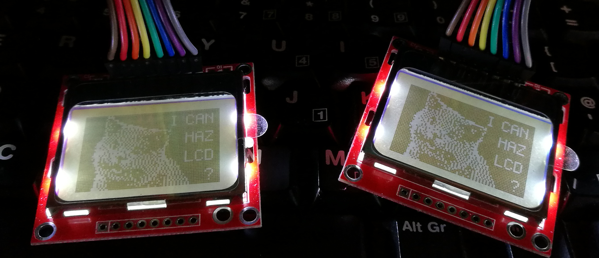

Building the Tardis Desk
An interactive standing desk for working from home
Background
A couple of years ago I got interested in the idea of building a standing desk for those times when I was working from home. I was then using a bog-standard sitting desk and had moved my office around the house as DIY projects and family demands dictated.
I had started to measure things up and sketched out a design for the desk frame when coincidentally yet another redecoration project made an old wardrobe redundant. As I started emptying it and thought about smashing it to bits, the carcass suddenly seemed to me to be about the same dimensions as the desk I had planned.
Never being one to waste money or wood, I fitted some extra shelving inside the wardrobe, installed my PC and a couple of monitors and hey presto, a functional standing desk practically for free.

Becoming a Tardis
Functional but boring, so I began to think about giving it a lick of paint. I decided to pick a theme based on a possibly the most famous standing desk of all time - the Tardis
I had to chisel off the faux-deco panels to get 2 flat doors, then made some framing panels from MDF, pinned and glued them into place and gave the whole thing a couple of coats of dark blue paint. I wasn't too fussed about the quality of the finish as I wanted it to look a bit weather-beaten.
I masked off the top panel in each door to let the white undercoat show through for the top windows(?). A black POLICE BOX roof sign and the white FOR USE OF PUBLIC door signs were printed off and the Tardis was complete. Even more complete that Xmas when I was gifted a revolving police light.

I decorated the insides of the doors with some spacey vinyl from a old conference display that was being thrown out at work and the guts of some dead hard drives and scrap 80s computers from eBay.
Becoming Interactive
So the decoration was done and gave me a little lift every time I walked past the spare room and saw my own Tardis brooding in the corner - believe me you do need something to make you smile every now and then if you work from home for any length of time.
When I thought about my memories of the Tardis in the 70s and 80s, it was all dials, knobs, gauges and screens. I started to browse eBay looking for old equipment panels to decorate the blank spaces in the desks. I managed to get a job-lot of old moving coil gauges and aircraft equipment and laid them out on some plywood cut to fit the gap in the desk. I also added a Muirhead radio test set which had some nicely tactile rheostats.
Now I'm not sure what sparked the original idea but I have been acquiring Raspberry Pis since the first models came out but had never done anything with the GPIO pins - due to a lack of knowledge and a suitable project. I saw that some people had used Pis to drive old gauges for clocks and bandwidth monitors and wondered if I could do something similar.
I read up about it, got myself a carton of 600+ resistors of different ratings and a bunch of dupont cables. Granted I should have done this properly and read the rating of each gauge and calculated the correct resistor to use, but I just went with trial and error - starting with the largest size, switching the pin on and seeing if and how far the needle moved.
Once I had sorted out and made notes of the resistors, put the dead gauges to one side and laid out the good gauges, I cut the plywood to allow the gauges to sit slightly proud and leave the contact free at the back.
I just happened to have an enormous roll of metallic "sticky-back paper", so I applied that to the plywood to create a fake metal panel for the gauges to sit on.

I decided what to indicate with each gauge and Dymo'd some labels and wired it all up. To my astonishment, one Pi B was able to handle a dozen gauges, a physical switch and a bunch of LEDs simultaneously (as well as running MPD and Mercurial servers in the background).

The gauges and the code
- CPU and GPU temperatures (scaled to indicate max as 100C)
- CPU load (scaled to indicate max as 100%)
- RAM usage
- Network usage in and out
- VPN usage
- Disk usage
- Outside temperature
- The inevitable clock - using 2 gauges and 3 LEDs for over-engineering points
The basic principle for driving a moving coil gauge is to connect the postive and negative contacts to a GPIO pin (via a resistor) and ground respectively and then send a PWM signal via GPIO to move the needle. I used a Pi-Cobbler to connect the pi to a breadboard. My first attempt involved fitting the resistors between 2 female-ended dupont wires but the wiring became completely chaotic and kept snagging and breaking the connections.

My second attempt involved inserting the resistors into the breadboard and using short M-M dupont wires to connect to the GPIO pins and ground rails. This allowed me to tidy up the wiring so that they would not cross (in theory) but the end result was still spaghetti.

Switches and dials
So far, so good. We have lots of outputs updating in near real-time, but how about adding some input controls?
Something I have to do every time I work from home is connect to the VPN at work, so how about making a switch for this? Obviously it couldn't be any ordinary toggle switch, it had to be a missile switch with a flip cover
Over to the right I added an illuminated toggle switch to switch off the privoxy server running on another Pi, through which my daughter's devices connect to the web. This enables me to make good on the almost daily threat: "If you don't brush your teeth, I'm turning the internet off".
The last input was a good deal more complex. I wanted to use at least on of the rheostats on the Muirhead radio test set to control the volume of my sound card (despite having a dedicated volume control knob on my desk as well as volume buttons on one of my keyboards). I had some vague idea about the knobs varying resistance as measured with a multimeter, but I had run out of pins on my Pi and didn't really know how to approach it, so I put it on the back burner.
A few months later I was really into cheap Arduino clones, especially the NodeMCU variants, and stumbled upon this question in the Arduino forums. That gave me the confidence to try hooking up the Muirhead rheostat(s) to the analog pin on a NodeMCU using (what I think is) a voltage divider.
It detects changes in the position of 2 of the rheostats and sends a request to the PC (via the Pi) to adjust its volume. One dial controls large volume adjustments and the other fine adjustments. This is of course completely pointless, I just wanted to see if it was possible and how to do it.
//Arduino code for NodeMCU reading the Muirhead rheostats
int muirhead;
int lastDialValue = 0;
void setVolume() {
Serial.println(muirhead);
Serial.println("http://192.168.1.83:8884/?value=" + (String)muirhead);
HTTPClient http;
http.begin("http://192.168.1.83:8884/?value=" + (String)muirhead);
int httpCode = http.GET();
Serial.println(httpCode);
}
void loop() {
muirhead = analogRead(A0);
if (abs(muirhead - lastDialValue) > 20) {
setVolume();
lastDialValue = muirhead;
}
}
//node.js code on the Pi that responds to requests from the NodeMCU
//and translates the parameter into a volume value to be set over ssh
function volumeLevel(dialValue) {
//the NodeMCU analog reading is from 0 to 1024 (in reverse order)
//7.3 is a scalar arrived at by trial and error
//to translate this to a suitable percentage
return Math.floor((1024 - dialValue) / 7.3);
}
var server = http.createServer(function (request, response) {
console.dir(request.url);
var value = url.parse(request.url, true).query.value;
if (value) {
console.log("setting volume " + value);
sshCall("pactl set-sink-volume 0 " + volumeLevel(value) + "%");
console.log("volume set");
}
response.writeHead(200, {'Content-Type': 'text/plain'});
response.end("OK");
});
Adding screens
By day I am a software tester and tend to use a lot of monitors. On my desk in the office, I have 4 monitors, plus 2 laptops and an iPad in constant use. I cannot replicate this at the same scale in the Tardis desk as it is not really even wide enough for 2 monitors.
I started to think what I could do about this, toying with the idea of using another Pi behind the instrument panel to drive some cheap Chinese LCD panel. I didn't want to break the symmetry of the panel and was loathe to chance my luck with the expense and power demands of 2 panels but then I saw that the old Nokia 5110 screens could be re-purposed as Pi screens. This seemed like a suitably retro-modern addition to the desk, so I ordered 2. Wiring them up involved only my sewcond bout of soldering in 30 years and the smell of melting lead and flesh brought back the memories of my work experience week at Marconi.
They are not difficult to solder, my only advice would be to decide whether the wires should approach from the front or the back of the screen panel BEFORE you start. Thankfully there are 2 SPI panels available on a Pi, so I could run both screens from one Pi.
I use the screens to show the sender and subject of my latest emails. Work on the left and personal on the right. The software runs on the Pi, using the mail-notifier node.js module to poll 2 email accounts and a python script to update the screens. When a new email arrives, the Pi switches on the screen backlight and lights up an LED for 30 seconds, then blinks it for another 30 in a usually vain attempt to get me to pay attention.
//node.js script to poll email and send updates to
//a local python server to update the Nokia screens
var sh = require("child_process").execSync;
var wpi = require("wiring-pi");
wpi.wiringPiSetupGpio();
var notifier = require('mail-notifier');
var now = new Date();
var yahooPin = 5;
var yahooBkl = 17;
var yahooScr = 1;
var workPin = 6;
var workBkl = 18;
var workScr = 0;
wpi.pinMode(yahooPin, wpi.OUTPUT);
wpi.digitalWrite(yahooPin, 0);
wpi.pinMode(workPin, wpi.OUTPUT);
wpi.digitalWrite(workPin, 0);
function lighton(pin) {
wpi.digitalWrite(pin, 1);
}
function blink(pin) {
wpi.digitalWrite(pin, 1 - wpi.digitalRead(pin));
}
var blinkers = {};
function blinker(pin) {
if (blinkers[pin]) {
clearInterval(blinkers[pin]);
}
blinkers[pin] = setInterval(blink, 1e3, pin);
}
function lightoff(pin) {
clearInterval(blinkers[pin]);
blinkers[pin] = null;
wpi.digitalWrite(pin, 0);//off
}
function mailLight(pin, bkl) {
lighton(pin);
setTimeout(blinker, 30e3, pin);
setTimeout(lightoff, 60e3, pin);
}
function cleanstring(str) {
return str.replace(/\W+/g, " ").replace(/("|')/g, "");
}
console.log(new Date() + " CONNECTING TO YAHOO");
var yahoo = {
user: "user@yahoo.com",
password: "password",
host: "imap.mail.yahoo.com",
port: 993, // imap port
tls: true,// use secure connection
tlsOptions: { rejectUnauthorized: false },
markSeen: false,
search: [ 'UNSEEN', ['SINCE', now] ]
};
var ny = notifier(yahoo)
.on('mail',function(mail){
console.log(mail.date);
console.log(mail.from);
console.log(mail.subject);
mailLight(yahooPin, yahooBkl);
sh("wget -q -O- 'http://localhost:7777/?screen=" + yahooScr
+ "&msg=" + cleanstring(mail.from[0].name.slice(0,15)) + " "
+ cleanstring(mail.subject) + "'");})
.on("connected", function () {
console.log(new Date() + " CONNECTED TO YAHOO");
})
.on("error", function (err) {
console.dir(err);
})
.start();
ny.on('end', function () { // session closed
console.log(new Date() + " RESTARTING CONNECTION TO YAHOO");
ny.start();
});
console.log(new Date() + " CONNECTING TO OUTLOOK");
var outlook = {
user: "user@outlook.com",
password: "password",
host: "outlook.office365.com",
port: 993, // imap port
tls: true,// use secure connection
tlsOptions: { rejectUnauthorized: false },
markSeen: false,
search: [ 'NEW' ]//[ 'UNSEEN', ['SINCE', now] ]
};
var lastWorkEmail = 0;
var newEmail;
var no = notifier(outlook)
.on('mail',function(mail){
newEmail = false;
console.log(mail.date);
if (new Date(mail.date) > lastWorkEmail) {
newEmail = true;
lastWorkEmail = new Date(mail.date);
}
console.log(mail.from);
console.log(mail.subject);
mailLight(workPin, workBkl);
sh("wget -q -O- 'http://localhost:7777/?screen=" + workScr
+ "&msg=" + cleanstring(mail.from[0].name.slice(0,15)) + " "
+ cleanstring(mail.subject) + "'");
})
.on("connected", function () {
console.log(new Date() + " CONNECTED TO OUTLOOK");
})
.start();
no.on('end', function () { // session closed
console.log(new Date() + " RESTARTING CONNECTION TO YAHOO");
no.start();
});
# respond to GET requests on port 7777 passing the msg parameter
# to the specified numbered screen
#!/usr/bin/env python
from BaseHTTPServer import BaseHTTPRequestHandler, HTTPServer
import urlparse
import SocketServer
class S(BaseHTTPRequestHandler):
def _set_headers(self):
self.send_response(200)
self.send_header('Content-type', 'text/plain')
self.end_headers()
def do_GET(self):
self._set_headers()
self.wfile.write("hi!")
if (self.path != '/favicon.ico'):
o = urlparse.urlparse(self.path)
print urlparse.parse_qs(o.query)
newtxt = urlparse.parse_qs(o.query)['msg'][0]
scr = int(urlparse.parse_qs(o.query)['screen'][0])
print scr
showText(newtxt, scr);
def do_HEAD(self):
self._set_headers()
def do_POST(self):
# Doesn't do anything with posted data
self._set_headers()
self.wfile.write("POST!")
def run(server_class=HTTPServer, handler_class=S, port=80):
server_address = ('', port)
httpd = server_class(server_address, handler_class)
print 'Starting httpd...'
httpd.serve_forever()
import time
import Adafruit_Nokia_LCD as LCD
import Adafruit_GPIO.SPI as SPI
from PIL import Image
from PIL import ImageDraw
from PIL import ImageFont
# Raspberry Pi software SPI config:
SCLK = [11, 21]
DIN = [10, 20]
DC = [23, 22]
RST = [24, 27]
CS = [8, 7]
BKL = [19, 17]
def showText(msg, screen):
# Software SPI usage (defaults to bit-bang SPI interface):
disp = LCD.PCD8544(DC[screen], RST[screen], SCLK[screen], DIN[screen], CS[screen])
# Initialize library.
disp.begin(contrast=60)
print msg
if (len(msg) < 16):
line = 15
margin = (15 - len(msg)) * 4
else:
line = 0
margin = 0
msgparts = [msg[i:i+16] for i in range(0, len(msg), 16)]
# Clear display.
disp.clear()
disp.display()
# Create blank image for drawing.
# Make sure to create image with mode '1' for 1-bit color.
image = Image.new('1', (LCD.LCDWIDTH, LCD.LCDHEIGHT))
# Get drawing object to draw on image.
draw = ImageDraw.Draw(image)
# Draw a white filled box to clear the image.
draw.rectangle((0,0,LCD.LCDWIDTH,LCD.LCDHEIGHT), outline=255, fill=255)
# Load default font.
# font = ImageFont.load_default()
# Alternatively load a TTF font.
# Some nice fonts to try: http://www.dafont.com/bitmap.php
# font = ImageFont.truetype('Minecraftia.ttf', 8)
font = ImageFont.truetype('/home/pi/fonts/pf_tempesta_seven.ttf', 8)
# Write some text.
for msgpart in msgparts:
draw.text((margin, line), msgpart, font=font)
line = line + 9
# Display image.
disp.image(image)
disp.display()
if __name__ == "__main__":
from sys import argv
if len(argv) == 2:
run(port=int(argv[1]))
else:
run()
Inevitably, this wasn't enough screen real estate, so I turned my attention to other useable equipment I had lying around. I dug up a Nook HD and a Nook HD+, both with cracked screens and 2 pre-flammable Samsung Galaxy Notes. The Nooks were attached to the frame of the Tardis overhead using gooseneck clamps and I used screws to attach the Notes to the 2 large gauges I wasn't using on the panel.

Rather then having them exist as independent screens, I create 3 VNC sessions on my desktop and point the Nook HD and the 2 Notes to those sessions. I use x2x to allow my keyboard and mouse to control those sessions when I hit the screen edges of my main desktop. When I log into my desktop, I run this bash script to enable VNC/x2x control:
#!/bin/bash
sudo killall Xvnc4
sudo killall x2x
sleep 5
#nook HD
vncserver -geometry 1420x768
sleep 5
x2x -west -to :1 &
#note 4
vncserver -geometry 1280x720
sleep 5
x2x -east -to :2 &
#note 2
vncserver -geometry 1280x720
sleep 5
x2x -south -to :3 &
Occasionally I run a synergy client on the (rooted) Nook HD+ to gain keyboard and mouse control but more often than not, it's simply used natively as an Android Slack client. These extra small screens allow me to display things I need to keep an eye on, such as server logs when testing or the Pi camera in the lounge to make sure the cat an the dog are not tearing the place up while I'm working.


Enhancing a keyboard
My Corsair K-65 is a perfectly fine mechanical keyboard but I did shoot myself in the foot somewhat be replacing all the letter keys with blank keycaps. Although I have been using keyboards regularly for more than 3 decades, I am by no means a touch typist. I can cope quite well with general typing but I need to use a lot of passwords for work and with blank keycaps and no visual feedback when typing, it can become quite annoying.
Just before Xmas I spotted some Cherry G81-7000 retail keyboards on eBay. They had built in card-readers and programmable keys. I thought "they are mechanical keyboards, how bad can they be to type on?" Actually pretty terrible. They don't feel mechanical at all but for £5 it will do. I stripped out the card-reader and added a NodeMCU wired to 2 small displays - one LED and one LCD - and added 3 leds for visual flair. I also replaced some keys with spare blank black keycaps for extra edginess. The whole thing needed a good clean as every keycap had years of grime caked on. I removed this with the harshest cleaning product known to man - baby wipes. Pulling all the keycaps also revealed a number of clothes tags and paper-clips stuck under several keys. After that the typing experience improved but still not great.

I programmed the NodeMCU in the keyboard to display todays date on the LED and weather updates on the LCD.

Getting Exercised